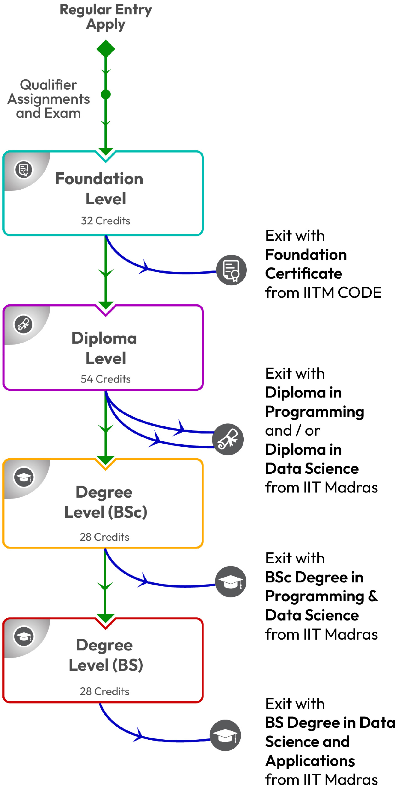

3 Courses in the programme
3.1 Definition of Credit in the Program
The credits here are based on the UGC system of counting 14 hours of learner engagement as 1 credit. (1 credit mentioned here would be equivalent to 3 credits in the current IITM campus Credit system.)
The number of credits required to graduate with the BSc is 114 while that for the BS is 142. The structure of the program is as follows:
3.2 Level 1: The Foundation Level
- Comprises 8 courses: English 1, English 2, Mathematics 1, Mathematics 2, Statistics 1, Statistics 2, Computational Thinking, Introduction to Python
- Number of credits: 32
3.3 Level 2: Diploma Level
- Includes 2 Diplomas: Diploma in Programming and Diploma in Data Science
- Each diploma comprises 6 courses (23 credits) and 2 project courses (4 credits)
- Number of credits: 54
3.3.1 Diploma in Programming
- Database Management Systems (DBMS), Programming Data Structures and Algorithms using Python (PDSA), Java Programming, System Commands, Application Development – 1, Application Development – 2
- Project course in Application Development – 1
- Project course in Application Development – 2
3.3.2 Diploma in Data Science
- Machine Learning Foundations (MLF), Machine Learning Techniques (MLT), Machine Learning Practice (MLP), Business Data Management (BDM), Business Analytics (BA), Tools in Data Science (TDS)
- Project course in Business Data Management
- Project course in Machine Learning Practice
(Those students who fall short of the 54 credits in the Diploma level (temporary, for a few students) will have to do additional courses in the BSc level to make up for the deficit in credits. A student will be eligible for the BSc degree only if they complete 114 credits as per the norms given.)
3.4 Level 3: BSc Degree Level Courses
- Total of 28 credits
- Mandatory 2 core pairs (Software Engineering, Software Testing, Artificial Intelligence and Deep Learning)
- Mandatory course: Strategies for Professional Growth
- Maximum of 4 credits can be obtained from NPTEL, technical bucket
3.5 Level 4: BS Degree Level Courses
- Total of 28 credits
- Option of Apprenticeship – for 4/12 credits
- Mandatory to earn 4 credits from HS/MG stream, from NPTEL or program electives
- 2 level 4 courses in programming stream and 2 level 4 courses in the data science stream should be mandatorily completed
Apprenticeship has been split into 2 courses – one of 4 credits that corresponds to the 4-month internship and another as 8 credits for the term of apprenticeship that is continued from months 5–8 in the same company and domain.
Apprenticeship is optional and one can earn 0/4/8/12 credits from it.
- The list of courses in
The list of courses in the 3 tables here are subject to periodic revision.
- Refer Credit Transfer for NPTEL Courses for process and credit transfer fee.
The course code defines the level of the course. If the course code is 2xxx, 3xxx, or 4xxx then the level of the course is 2, 3, or 4 respectively.
The fee for the level 3 courses is Rs 2500/credit while that of level 4 courses is Rs 5000/credit.
Minor in Economics and Finance:
The minor in Economics and Finance can be earned by completing 2 mandatory courses, namely Corporate Finance and Managerial Economics, and one elective course from the list below, to which more courses will be added shortly.
Game Theory and Strategy (Elective already available)
These 3 courses can be credited within the 142 credits required for the BS degree. The Minor can be earned only with the BS degree and not the BSc degree.
A separate document will be issued by IITM stating that the Minor has been completed. There will be no change in transcript or the degree certificate for those who do the minor.
